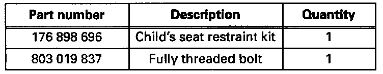
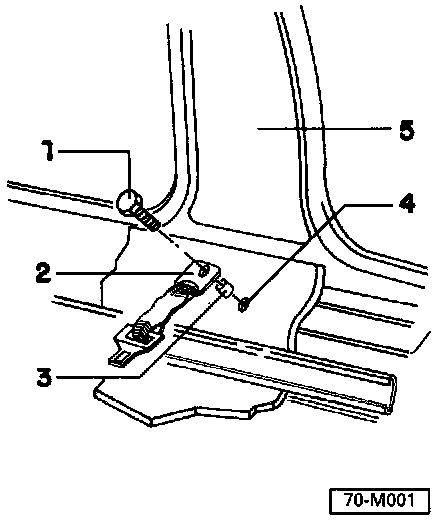

Front Seat
Vehicles With Passive Belt RestraintWARNING:
^ The child's seat restraint belt is NOT to be used as a lap belt by a child or by an adult. Improper use could result in personal injury.
^ The adult lap belt in the vehicle is Not to be used to install a child's seat
Parts Required:

CAUTION: Part numbers are for reference only. Always check with your Parts Department for the latest in formation.
NOTE: Depending on the vehicle, some parts of the kit may not be required.
Installation
- Remove clips from right-side front and rear sill scuff plates, and remove scuff plates.

- Locate threaded fastener -4- in right rocker panel (below right-side B-pillar -5-).
- Install tongue and anchor assembly -2- from kit. Make sure that metal bushing -3- is in place.
- With tongue and anchor assembly mounted perpendicular to driving direction, tighten mounting bolt -1-to 40 Nm (30 ft lb).
CAUTION: Use only the fully-threaded bolt, specified in these instructions, to mount the tongue and anchor assembly.
- Install front and rear scuff plates.
- Place child's seat on front passenger seat.
- Buckle both ends of child's seat belt. Adjust to fit snugly over child's seat by pulling loose end of webbing to tighten.
NOTE: When not using the child's seat belt with a child's seat, unbuckle both ends and store it in the glove box